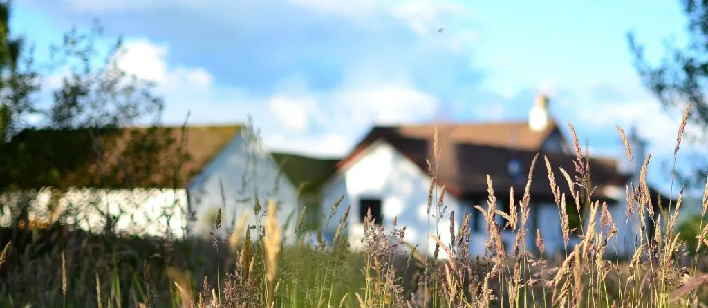
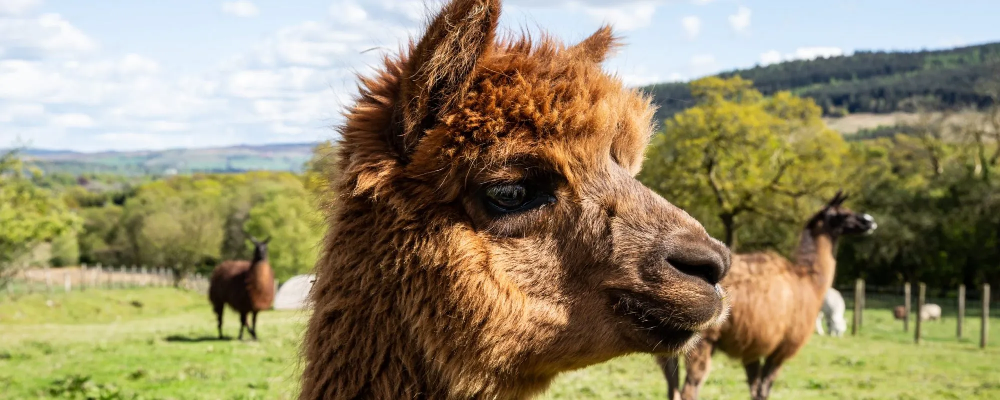
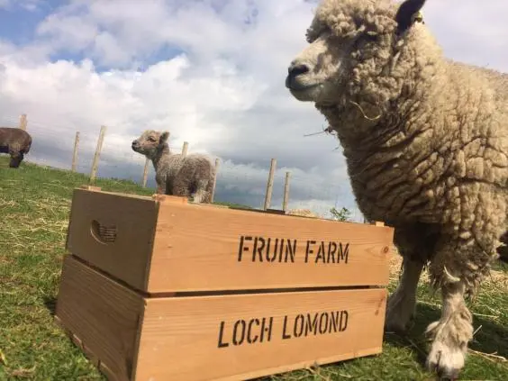

The Venue
Fruin Farm
A working farm tucked into Glen Fruin, just west of Loch Lomond. Wide skies, ancient woodland, and red squirrels in the trees. We fell for it the moment we drove down the long farm track.
A working farm in Glen Fruin
The farm has been in the same family for generations. The barn is dressed with seasonal wildflowers, lit by hundreds of candles and strung with festoon lights as the evening draws in.
Nearby you'll find Loch Lomond, the Trossachs, and some of the prettiest walks in Scotland.
Glen Fruin · Helensburgh · G84 9EE
Ceremony
Planned for outdoors with the hills as our backdrop, weather permitting, and the barn as a beautiful back-up.
Reception
Family-style supper served in the candle-lit barn. Local produce, Scottish cheeses, and far too much cake.
Outdoor space
Open meadow, fire pit, and a view across to the hills. Bring a layer for the evening.


